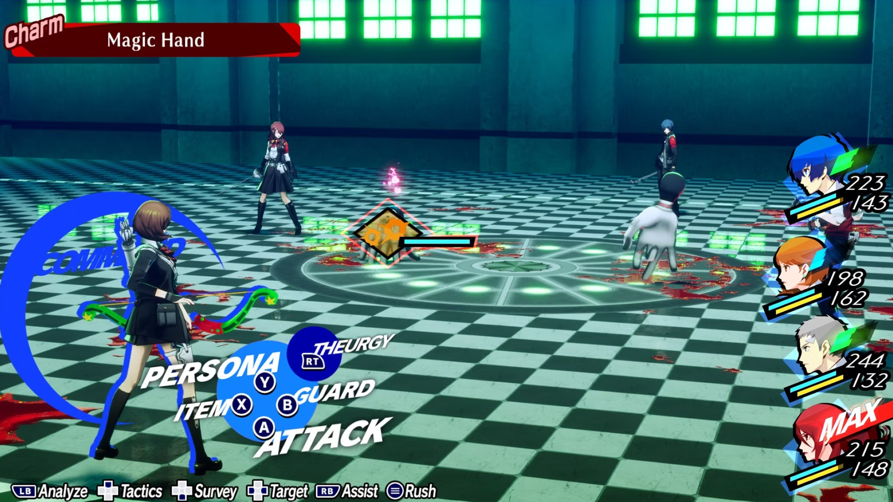

Persona 3 Reload is a remake of the game Persona 3, which was first released in 2006. This game is part of the Persona series, a spin-off of the Shin Megami Tensei franchise.
Persona 3 Reload brings visual updates, improved game mechanics, and various new features that provide a fresher gaming experience.
By combining dungeon-crawling and daily life simulation elements, this game offers a unique experience that blends exploration of the real world and the supernatural world.
Story
The story of Persona 3 Reload focuses on the main character who has just moved to Iwatodai City.
Shortly after moving, he discovers a secret time called the Dark Hour—a time between midnight and dawn that can only be accessed by those with a special power called Persona.
In-game screenshot when the main character moves to Iwatodai City during the Dark Hour
The main character and his friends from the SEES (Specialized Extracurricular Execution Squad) must explore Tartarus, a tower filled with Shadows that appears during the Dark Hour,
while facing mysterious threats that seek to destroy the world. With themes that touch on death, existence, and the will to live, this game creates an intense and profound atmosphere throughout the story.
Gameplay Rules
As in other Persona series, Persona 3 Reload divides gameplay into two main elements: social life simulation and dungeon battles.
During the day, you live the life of a high school student—attending classes, interacting with friends, building social relationships (Social Links),
and carrying out various daily activities. Every choice you make in your daily life will have a direct impact on your abilities in battle.
In-game screenshot of one of the Social Link activities
One of the biggest updates in Persona 3 Reload is the addition of activities you can do with friends outside of the main Social Links,
such as reading books together, gardening, cooking, or studying for exams. These activities not only add depth to social interactions,
but also provide additional points that strengthen Social Link relationships with related characters.
Additionally, the game introduces various quality of life (QoL) improvements, such as text messages that help players track activities available during both daytime and nighttime.
The online activity tracker feature also gives you an idea of what other players are doing at that time, helping you decide which activities are most important and effective.
At night, you can choose to continue your social activities or switch to battle inside Tartarus, a tower filled with Shadows, the main enemies in the game.
The combat in this game uses a turn-based system, where players and enemies take turns attacking. You must experiment to find your enemies' weaknesses,
or use your friends' Persona powers to analyze and exploit those weaknesses. By taking advantage of these weaknesses, you can launch the right elemental
attacks to defeat your enemies more easily.

In-game screenshot during combat
One new element in combat is Theurgy, the ultimate attack of SEES members that has a huge impact in battle. Tartarus, now created with a modern engine,
looks more terrifying and feels more balanced. Even bosses that have no weaknesses can be defeated by utilizing strategies such as the proper use of buffs and debuffs.
A combination of careful attacks and tactics will be very helpful in overcoming the challenges that lie ahead.
Scenario
Persona 3 Reload offers only one main scenario, namely Story Mode, which follows the main character's journey in uncovering the mystery behind the Dark Hour.
Players will live the daily life of a student, build relationships with other characters through Social Links, and explore Tartarus to fight Shadows and uncover
the secrets behind the Dark Hour phenomenon.
Game Review
Why is this game the best in my opinion?
Deep Narrative: Persona 3 is known for its deeply emotional story and heavy themes of life and death. With updated visuals and audio, Reload provides a more immersive experience.
Combination of Life Simulation and Combat: One of the main strengths of Persona 3 Reload is its blend of school life simulation and intense dungeon exploration. This balance makes the game feel unique and different from typical JRPGs.
Iconic Music: The soundtrack by Shoji Meguro and Atsushi Kitajoh remains one of the best elements of the series, and Reload features remastered old tracks as well as several new ones that add to the game's atmosphere.
Visual Improvements: The use of Unreal Engine 4 makes the game's visuals more modern and pleasing to the eye.
Persona Fusion: One of the game's key features is the ability to fuse Personas and create stronger ones, adding depth to battle strategy.
Long Completion Time: With exploration and life simulation elements, the game successfully immerses players in its world. I personally spent 96 hours completing the game and managed to earn 47 out of 56 Xbox Achievements.
Why is this game fun according to Bartle's Taxonomy?
Referring to Bartle's theory, which divides players into four types (Achievers, Explorers, Socializers, and Killers), Persona 3 Reload offers something for every type of player.
Achievers are the type of players who feel satisfied when they get something that satisfies their mind and senses. Here are some things that Achievers can do in Persona 3 Reload.
In-game screenshot of the Persona Compendium (4% completion)
Complete the Persona Compendium.
Obtain powerful Personas.
Complete all available Side Quests.
Maximize all Social Link levels.
Obtain all available weapons, armor, and cosmetics.
Enjoy stunning visuals, both in character design and environment.
Enjoying the awesome soundtrack.
Completing all Achievements depending on the platform where you play the game (Steam Achievements, Xbox Achievements, PlayStation Trophies).
Explorers are the type of players who find it fun when they get something that satisfies their curiosity or intrigue. Here are some things Explorers can do in Persona 3 Reload.
In-game screenshot during exploration on one of Tartarus's floors
Explore all floors of Tartarus, where the floor structure is randomly generated.
Explore activities in the city.
Make progress in the story to learn more about the lore behind the world of Persona 3 Reload.
Learn about the arcana of the next full moon boss.
Experience all story branches.
Socializers are players who enjoy gaining social status, such as being praised, appreciated, noticed, listened to, and so on. Here are some things that Socializers can do in Persona 3 Reload.
In-game screenshot of the "Connect to the Network" feature
Building relationships with NPCs through Social Links. Every conversation you have will affect your relationship with that NPC. From this, we know that indirectly, the developers want all your opinions to be heard.
The “Connect to the Network” feature allows you to see other players' activities for that day.
Communities on Steam Community, Reddit, and others enable you to engage in discussions about Persona builds and the best team compositions to defeat specific bosses or deal the highest damage.
Killers are the type of players who find it fun to vent their emotions, such as anger, resentment, irritation, and so on. Here are some things that Killers can do in Persona 3 Reload.
In-game screenshot during a Full Moon boss battle
Defeat the boss that appears during the full moon to continue the story.
Defeat the boss inside the Monad Door to obtain the item it guards.
Defeat the miniboss guarding the path to the next floor of Tartarus.